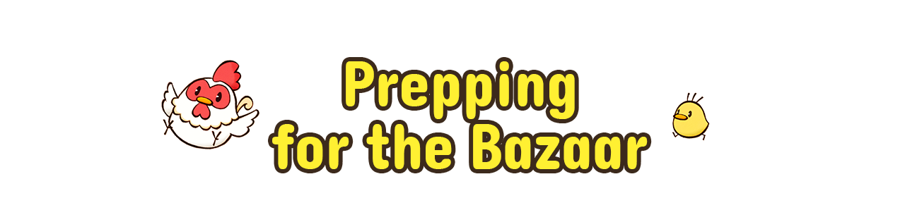
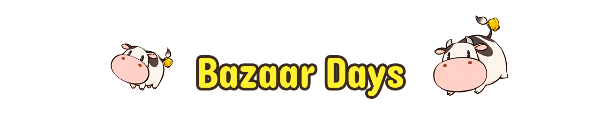
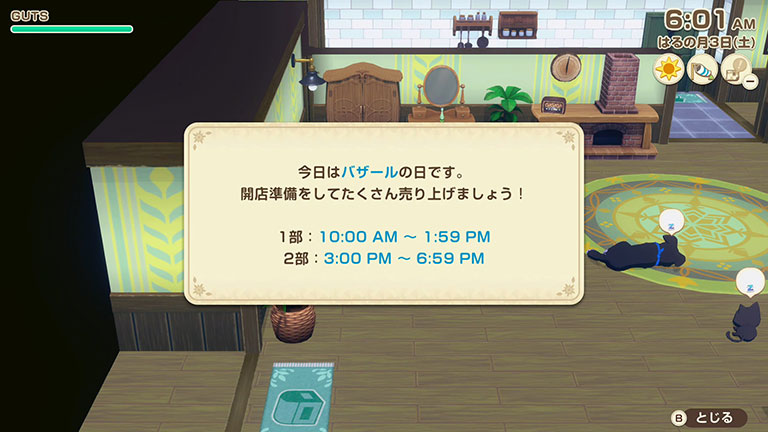
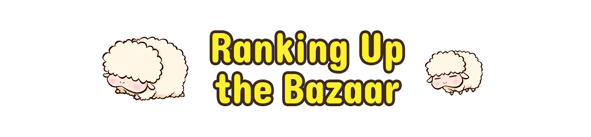
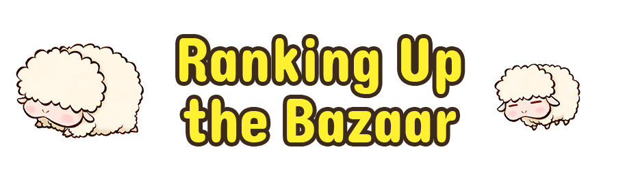
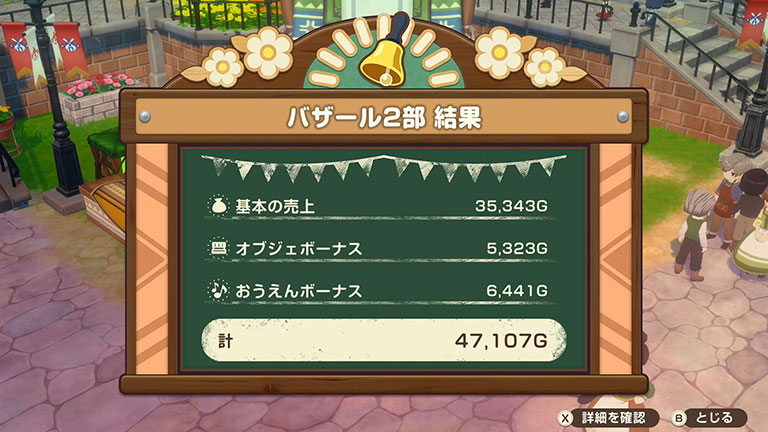

-
Opening Up Shop
When it's time to open shop, head to your stall in the northeast area of the bazaar grounds. Each bazaar day is split into two shifts, one in the morning and one in the afternoon.

-
Bazaar Sales
A summary of your sales will be shown after each bazaar shift. The Bazaar Review Board sends their review the following morning, issuing an increase in rank if your bazaar met its goals.